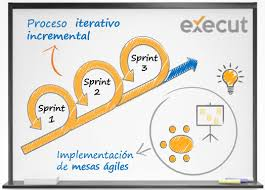
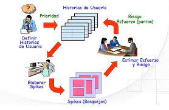
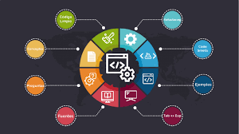
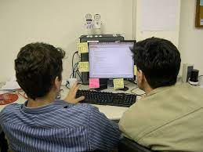

Programación Extrema
Conceptualización
Tambien conocida como programacion xp, es uno de los métodos ágiles utilizados, se creó utilizando buenas prácticas reconocidas, como desarrollo iterativo y con la participación del cliente en niveles "extremos". En esta metodología, los requerimientos son plantaeados como escenarios, tambien conocidas como historias de usuarios que son representas coko tareas. Loa programadores realizan su trabajo parejas y desarrollan pruebas para cada tarea antes de escribir el código. Las pruebas se deberían ejecutar sin problemas, es decir, cuando el codigo nuevo se integre al sistema.
la programación extrema utiliza varias practicas, las cuales se ajustan a los principios de los métodos ágiles.

prácticas de la programación extrema
planificación incremental
los requerimientos se registran en fichas o tarjetas de historias, las historias incluidas en una entrega se determinan segun el tiempo disponible y su prioridad relativa. los desarrolladores dividen estas historias en tareas de desarrollo.
Entregas pequeñas
cada version debe ser tan pequeña como sea posible,conyeniendo los requisitos de negocios más importantes, las versiones tienen que tener esntido como un todo.las entregas del sistema son frecuentes e incrementalmente añaden funcionalidad a la primera entrega. es más fácil planificar para un 1 mes o 2 que para 6 meses y un año.
Diseño sencillo
sólo lleva a cabo el diseño necesario para cumplir los requerimientos actuales.

Desarrollo previamente aprobado
se utiliza un sistema de prueba automatizado para escribir pruebas para nuevas funcionalidades antes de que estas se implementen.
Refactorización
se espera que todos los desarrolladores refactoricen el codigo continuamente tan pronto como emcuentren posibles mejoras en el código.esto conserva el código sencillo y mantenible.
Programación en parejas
Los desarrolladores trabajan en parejas, verificando cada uno el trabajo del otro y prorporcionando la ayuda necesaria para hacer siempre un buen trabajo.
